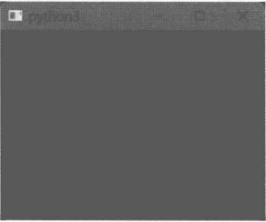
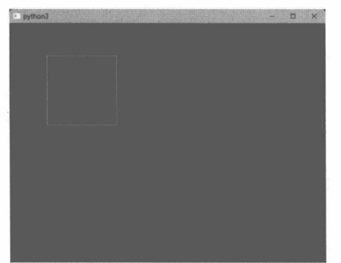
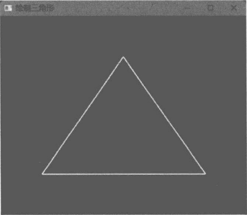
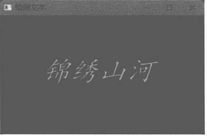
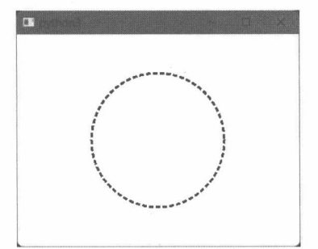
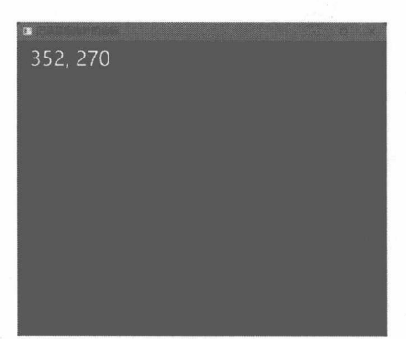
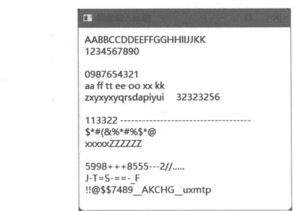
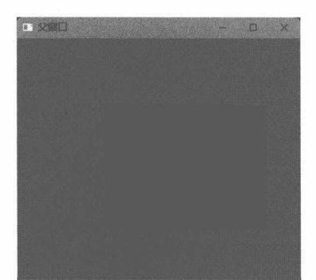
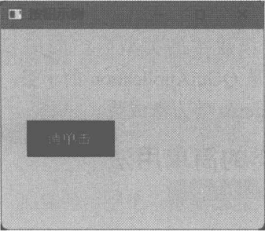

QWindow
- QWindow 类的基本用法。
- 绘制窗口内容。
- 键盘与鼠标事件。
- 嵌套窗口。
关于 QWindow 类
一般的 Qt应用程序不使用QWindow类来创建窗口，但在需要高度自定义窗口的情况下，使用QWindow类来创建窗口会比较灵活。
QWindow是窗口对象的基类，通常需要派生出自定义的窗口类型后再进行实例化。QWindow对象可以设置父窗口，从而组成窗口树。未设置父窗口的QWindow对象将成为顶层窗口。窗口对象在实例化之后不会马上显示到屏幕上，除非调用 show或 setVisible方法。
在创建任何窗口实例之前，必须先初始化QGuiApplication实例。在窗口显示后调用exec方法启动主消息循环。在最后一个窗口被关闭后，主消息循环才会退出。
4.1.1 一个简单的窗口
本示例仅演示 QWindow 类的基本用法，所以 CustWindow类只是简单地从QWindow类派生，并未实现自定义逻辑。
from PySide6.QtGui import QWindow, QGuiApplication
#自定义窗口类
class CustWindow(QWindow):
#构造函数
def __init__(self, parent = None):
#调用基类的构造函数
super().__init__(parent)
if __name__ == "__main__":
#先初始化应用程序对象
app = QGuiApplication()
#再初始化窗口对象
window = CustWindow()
#显示窗口
window.show()
#进入主消息循环
app.exec()在定义窗口类时，__init__ 方法可以设置一个parent参数，类型为QWindow类（兼容QWindow的子类)。parent参数用于为当前窗口实例指定父窗口，默认值为None，表示当前窗口对象是顶层窗口。
CustWindow保留窗口属性的默认值，show方法执行后会以默认大小和位置呈现到屏幕上，如图4-1所示。

CustWindow呈现后其背景为纯黑色，这是因为示例代码没有为窗口绘制任何内容。
4.1.2 窗口标题
调用 setTitle方法可以设置窗口的标题栏文本，随后用 title方法获取标题栏的文本，例如：
app = QGuiApplication()
wind = QWindow()
#设置标题栏文本
wind.setTitle("App")
#显示窗口
wind.show()
#打印标题栏文本
print("标题栏："+ wind.title())
app.exec()4.1.3 设置窗口的位置和大小
窗口位置（Position）是指窗口左上角在容器中的坐标。对于顶层窗口，它的容器是桌面；对于子窗口，容器就是父窗口。大小是指窗口的宽度和高度。
setGeometry方法可以同时设定窗口的位置和大小，签名如下：
def setGeometry(posx, posy, w, h)其中，posx和posy是窗口左上角在容器中的坐标值，w、h分别表示窗口的宽度和高度。
要单独设置窗口的位置可以调用 setPosition方法。
def setPosition(self, posx, posy)要单独设置宽度和高度，可以调用resize方法。
def resize(newSize: QSize)
def resize(w: int, h: int)resize方法有两个重载：
- 用一个QSize对象来封装宽度和高度；
- 直接用两个整数值表示。
若仅设置窗口的宽度，还可以调用 setWidth 方法。同理，调用 setHeight方法可单独设置窗口的高度。
4.1.4 示例：设置窗口的位置和大小
本示例创建了两个窗口：第一个窗口调用setGeometry方法同时设置窗口大小以及它在桌面上的位置，第二个窗口只设置窗口的宽度。
#初始化应用程序对象
app = QGuiApplication()
#第一个窗口
windowA = QWindow()
#设置标题栏文本
windowA.setTitle("窗口 1")
#设置窗口的位置和大小
windowA.setGeometry(386, 400, 350, 285)
#显示窗口
windowA.show()
#第二个窗口
windowB = QWindow()
#设置标题栏文本
windowB.setTitle("窗口 2")
#只设置窗口的宽度
windowB.setWidth(620)
#显示窗口
windowB.show()
#消息循环
app.exec()第一个窗口通过 setGeometry方法设置其在桌面上的相对坐标为(386,400)，宽度为350,高度为285;第二个窗口设置了宽度为620。
4.1.5 示例：处理窗口的Resize事件
当调用 QWindow类的 resize（或 setGeometry）方法，或者用户操作修改窗口的大小后会引发QEvent.Resize 事件，使 QWindow 类的 resizeEvent 方法被调用并传递 QResizeEvent 类型的事件参数。
QWindow 的子类可以重写 resizeEvent 方法来处理 Resize 事件。QResizeEvent 事件参数提供两个方法成员可以获取程序代码所关心的数据。
- oldSize:窗口在调整前的大小（旧值）。
- size：调整后的大小，即窗口的当前大小。
在下面的示例代码中，CustWindow类重写了resizeEvent 方法，然后使用 print 函数分别打印出窗口在调整前后的大小（宽度，高度）。
class CustWindow(QWindow):
def resizeEvent(self, arg: QResizeEvent):
#窗口原来的大小
old = arg.oldSize()
#窗口现在的大小
cur = arg.size()
print(f'窗口从({old.width()},{old.height()})到({cur.width()},{cur.height()})')初始化应用程序，显示窗口。
app = QGuiApplication()
win = CustWindow()
win.show()
app.exec()在窗口呈现后，通过鼠标调整窗口的大小，控制台会打印出以下内容：
窗口从(428,299)到(429,299)
窗口从(429,299)到(430,299)
窗口从(430,299)到(432,299)
窗口从(432,299)到(434,299)
窗口从(434,299)到(435,299)
窗口从(435,299)到(436,299)
窗口从(436,299)到(437,299)
窗口从(437,299)到(438,299)
窗口从(438,299)到(439,299)
窗口从(439,299)到(439,299)绘制窗口内容
在前面的示例中，读者已经了解到QWindow类或其子类创建空白窗口的过程—它就像一张全新的画布，上面什么东西都没有。设计窗口如同作画一样，需要调用相关API往窗口上绘制所需内容。
QPainter类是窗口绘制的核心组件，提供一些实用方法，可绘制各种常见的可视化对象。
- drawLine：绘制一根线段（直线段)。
- drawLines:绘制多根连续的线段。
- drawRect：绘制矩形。
- drawEllipse：绘制椭圆（包括正圆）。
- drawArc：绘制圆弧。
- drawChord：绘制弦。弦与圆弧的参数接近，但弦会把起点和终点连起来。
- drawPoint:仅绘制单个点。
- drawPoints：绘制多个点（点与点之间相互独立）。
- drawPolyline：绘制由一组坐标点连接起来的折线段。
- drawPolygon：绘制多边形。此方法与 drawPolyline 类似，但 drawPolygon 方法会将折线段的起点和终点连起来，形成闭合图形。
- drawConvexPolygon:绘制凸多边形。
- drawPie：绘制扇形。
- drawText:绘制文本。
- drawImage：将指定图像绘制到画布上。
- fillRect:填充矩形。
- setBrush：设置指定的画刷。QPainter对象将自动使用此画刷去填充图形内部。
- setPen：设置画笔。QPainter对象将使用画笔来绘制线条或文本。
QPainter 对象必须与一个QPaintDevice 对象关联，才能进行绘图操作。QPaintDevice代表一个抽象的二维空间坐标系，原点位于左上角。X轴向右延伸为正方向，Y轴向下延伸为正方向。一个QPaintDevice对象在同一时刻只能使用一个QPainter对象。
QPaintDevice 是公共基类，一般不直接使用。Qt 中已实现 QPaintDevice 的子类有 QWidget、QPaintDeviceWindow、QImage 等。
QPainter 对象一定要调用 begin 方法后才能进行绘图操作，并通过方法参数传递一个 QPaintDevice对象的引用（如果 QPaintDevice对象无效，将无法绘图）。begin方法调用后会将画刷、画笔、字体等资源重置为默认值。如果 begin方法返回 False，表示无法在指定的 QPaintDevice 上绘图。完成绘图后还要调用 end方法来释放各种被使用的资源（如画刷)。另外，可以将 QPaintDevice 对象传递给 QPainter类的构造函数，实例化后即可用于绘图，不需要调用begin方法。也就是说，QPainter对象与QPaintDevice对象有两种关联方式，任选其一即可。
#先实例化 QPainter 对象
painter = QPainter()
#再调用 begin 方法
painter.begin(paintDevice)
#---------- 第二种方案--
#直接传给QPainter的构造函数
painter = QPainter(paintDevice)4.2.1 QBackingStore
要在 QWindow 中绘制内容，需要用到 QBackingStore类。在初始化 QPainter 对象时，通过QBackingStore.paintDevice方法可以获取 QPaintDevice 对象的引用。下面的代码在窗口上绘制一个正方形。
#创建应用程序对象
app = QGuiApplication()
#创建窗口对象
myWind = QWindow()
#设置窗口大小
myWind.resize(680, 520)
#创建 QBackingStore 对象
backStore = QBackingStore(myWind)
#设置 QBackingStore 的大小
backStore.resize(QSize(400,400))
#先显示窗口，才能看到绘制效果
myWind.show()
#绘图区域
drawRect = QRect(QPoint(0,0), backStore.size())
#开始绘图
backStore.beginPaint(drawRect)
#创建QPainter 对象
painter = QPainter()
painter.begin(backStore.paintDevice())
#设置画笔
#颜色：R=0，G=200，B=255，A=255
#粗细：2.5
#线条样式：实线
painter.setPen(QPen(QColor(0,200,255,255), 2.5, Qt.PenStyle.SolidLine))
#画矩形
painter.drawRect(80, 70, 150, 150)
painter.end()
#结束绘图
backStore.endPaint()
#将数据发送到窗口
backStore.flush(drawRect)
#进入消息循环
app.exec()以上代码仅用于演示，绘图操作是在窗口对象外部进行的，因此无法响应窗口大小改变、重绘等事件，即正方形只绘制一次，当调整窗口大小后，已绘制的内容会丢失。QWindow和QBackingStore都有resize方法。前者用于调整窗口的大小，后者调整画布的大小。在上述代码中窗口与绘图画布的大小不一致，使得窗口上有一部分区域无效，如图4-2所示。

在调用 QBackingStore类的构造函数时，需要传递一个 QWindow 对象的引用，这样才能使绘制的内容显示到指定窗口上。paintDevice 方法返回QPainter 对象所需要的 QPaintDevice 引用。该引用只在调用 beginPaint和 endPaint方法之间的代码上下文中有效。因此，开发者不需要手动释放 QPaintDevice对象。绘图结束后，调用flush方法将所绘制的内容发送到窗口，否则内容不会显示。
4.2.2 示例：绘制三角形
本示例将 QBackingStore对象封装在QWindow的派生类内部，当窗口大小改变时方便重新绘制图形。具体实现步骤如下。
- 定义MyWindow 类，派生自 QWindow 类。
class MyWindow(QWindow):- 在__init__ 方法中设置窗口的标题、大小，以及创建QBackingStore对象实例。
def __init__(self, parent=None):
#调用基类成员
super().__init__(parent)
#设置窗口标题
self.setTitle("绘制三角形")
#设置窗口大小
self.resize(480, 390)
#创建QBackingStore 对象
self._backStore = QBackingStore(self)- 重写resizeEvent成员，当窗口大小被改变后，同步修改QBackingStore对象的画布大小，让其始终与窗口的大小一致。
def resizeEvent(self, arg: QResizeEvent):
#调整QBackingStore 对象的大小
self._backStore.resize(arg.size())- 重写paintEvent成员，在窗口上绘制等腰三角形。
def paintEvent(self, arg: QPaintEvent):
#获取绘图区域大小，一般与窗口大小相同
paintRect = arg.rect()
#开始绘图
self._backStore.beginPaint(paintRect)
#创建QPainter 对象
with QPainter(self._backStore.paintDevice()) as painter:
#三角形最高的顶点 Y 坐标为80，X坐标在窗口中央
pointA = QPoint(paintRect.width() / 2, 80)
#左边顶点的X坐标为80，Y坐标为窗口高度减去80
pointB = QPoint(80, paintRect.height() - 80)
#第三个顶点的X坐标为窗口宽度减去80，Y坐标为窗口高度减去80
pointC = QPoint(paintRect.width() - 80, paintRect.height() - 80)
#设置画布背景颜色
painter.setBackground(QColor("blue"))
#擦除画布内容，使画布背景重新着色（蓝色）
painter.eraseRect(paintRect)
#设置画笔
painter.setPen(QPen(QColor("yellow"), 3.0))
#设置画刷，用于填充三角形内部
painter.setBrush(QColor("red"))
#绘制三角形
painter.drawPolygon([pointA, pointB, pointC])
#结束绘图
self._backStore.endPaint()
#刷新数据
self._backStore.flush(paintRect)QPainter类存在__enter__、__exit__成员，这表明它可以用在with 语句块中，当语句块退出时会自动释放相关资源。
调用 setBackground方法设置一个用于绘制背景的画刷（上述代码中是蓝色画刷）。随后调用eraseRect方法擦除整个绘图区域的内容，QPainter对象会使用已设置的蓝色画刷重新绘制画布背景。
drawPolygon方法用于绘制多边形，并且自动连接起点和终点。将已计算好的三个顶点坐标传递给drawPolygon方法，能绘制三角形，并使用setBrush方法所设置的红色画刷填充三角形的内部。
- 下面的代码初始化应用程序，并把MyWindow窗口显示到屏幕上。
app = QGuiApplication()
#实例化自定义窗口
win = MyWindow()
#显示窗口
win.show()
app.exec()运行示例代码后，窗口上会呈现蓝色背景，以及轮廓为黄色、内部为红色的等腰三角形，如图4-3所示。

4.2.3 QFont
在绘制文本前，可以调用 QPainter 对象的 setFont 方法设置字体。随后调用 drawText方法所绘制的文本均使用该字体。
在Qt中，可以用QFont类来表示字体信息——包括字体名称、大小、样式、加粗等。在调用QFont构造函数时所指定的字体大小使用的计量单位是点数（point，简写为pt)。常见的默认字号为12pt，约为16像素（pixel，简写为px)。如果要以像素为单位设置字体大小，请调用 setPixelSize方法。
用于设置字体参数的常见方法如下。
- setBold：字体是否加粗。若参数为True表示加粗，否则表示常规模式。
- setItalic：字体是否倾斜（斜体）。
- setWeight：设置字体加粗的比重，如 Thin、Light、Bold、Black等。
- setPixelSize：设置字体大小，单位是像素。
- setPointSize：设置字体大小，单位是点。
- setStyle：设置字体样式（风格），一般指常规显示或者斜体。
- setFamily：设置字体名称。
- setFamilies：设置多个字体名称。字体列表中的第一个元素将作为主要字体使用。
- setStretch：字符宽度的拉伸因子。例如，150表示字符宽度为原来的1.5倍。
4.2.4 示例：在窗口上绘制文本
本示例将实现在窗口上绘制文本“锦绣山河”。
定义 CustWindow 类，从 QWindow 派生。
class CustWindow(QWindow):
def __init__(self, parent=None):
super().__init__(parent)
#创建QBackingStore 对象
self._backStore = QBackingStore(self)
#设置窗口大小
self.resize(450, 360)
#设置窗口标题
self.setTitle("绘制文本")
def resizeEvent(self, arg: QResizeEvent):
#调整画布大小
self._backStore.resize(arg.size())
def paintEvent(self, arg: QPaintEvent):
#要绘制的文本
text = "锦绣山河"
#字体
font = QFont()
#设置字体名称
font.setFamily("楷体")
#设置字体大小
font.setPointSize(42)
#设置为斜体
font.setItalic(True)
#绘制区域
drawRect = arg.rect()
#开始绘图
self._backStore.beginPaint(drawRect)
with QPainter() as painter:
painter.begin(self._backStore.paintDevice())
#设置背景
painter.setBackground(QColor("purple"))
#设置画笔
painter.setPen("gold")
#擦除画布
painter.eraseRect(drawRect)
#设置字体
painter.setFont(font)
#绘制文本
painter.drawText(80, 130, text)
#结束绘制
self._backStore.endPaint()
#发送数据到窗口
self._backStore.flush(drawRect)绘制字体使用的是 setPen方法设置的画笔，以及 setFont 方法设置的字体。drawText方法有多个重载，上述代码使用的是以下版本：
def drawText(x: int, y: int, s: str)x、y设置文本左上角的坐标，s表示要绘制的文本。
最终效果如图4-4所示。

QRasterWindow
QRasterWindow 既是 QWindow 的子类，也是 QPaintDevice 的子类。这意味着，QRasterWindow 实例可以直接传递给 QPainter 对象。因此，从QRasterWindow类派生的自定义窗口不需要手动创建QBackingStore 对象，直接重写paintEvent方法即可，例如：
class MyWindow(QRasterWindow):
def paintEvent(self, event: QPaintEvent):
rect = event.rect()
#创建QPainter对象
with QPainter(self) as painter:
#设置背景
painter.setBackground(QColor('white'))
#设置画笔
painter.setPen(QPen(QColor('blue'), 3.0, Qt.PenStyle.DotLine))
#清空画布
painter.eraseRect(rect)
#计算圆心
center = QPoint(rect.width() / 2, rect.height() / 2)
#计算半径
r = (rect.width() / 2) - \
50 if rect.width() < rect.height() else (rect.height() / 2) - 50 #绘制正圆
painter.drawEllipse(center, r, r)
if __name__ == "__main__":
app = QGuiApplication()
window = MyWindow()
window.show()
app.exec()在上述代码中，MyWindow类从 QRasterWindow 类派生，然后重写 paintEvent 方法，当窗口需要绘制内容时自动调用。上述代码在窗口中绘制一个正圆，如图4-5所示。

鼠标事件
QWindow类定义了4个与鼠标事件相关的方法成员。
- mousePressEvent：当鼠标上有按键被按下时触发（不管按下的是哪个键都会触发)。
- mouseReleaseEvent：当鼠标上某个按键被释放（松开）时触发。
- mouseDoubleClickEvent：当鼠标上某个按键被双击时触发（不管是哪个键都会触发）。
- mouseMoveEvent:当鼠标在当前窗口上移动时触发。
派生类可以重写上述方法来响应鼠标事件。
4.4.1 QMouseEvent
鼠标事件的事件参数都是QMouseEvent类。通过该类，程序代码能获取与鼠标行为相关的信息。主要成员如下。
- position：获取鼠标指针的局部坐标（相对于当前窗口）。
- globalPosition：获取鼠标指针的全局坐标（相对于屏幕或虚拟桌面）。
- button：获取触发事件的鼠标按键，如 LeftButton（左键）、RightButton（右键）、MiddleButton(中键)。
- buttons：获取鼠标事件发生时，各按键的状态。返回结果由MouseButton枚举的值组合而成。如果是按下按键事件，那么buttons方法返回的结果中将包含被按下键的值；如果是鼠标移动事件，那么所有按键都处于按下状态；如果是释放按键事件，那么buttons所返回的结果中将不包含被释放的按键。
4.4.2 示例：实时记录鼠标指针的位置
本示例将实现在窗口的左上角实时显示鼠标指针的位置。其原理是重写mouseMoveEvent方法，获取鼠标指针在当前窗口中的位置，然后调用窗口的 update方法重新绘制窗口内容（触发paintEvent)，把坐标信息绘制到窗口的左上角。
假设自定义的窗口类为DemoWindow，派生自QRasterWindow类。
class DemoWindow(QRasterWindow):
def __init__(self, parent:QWindow = None):
super().__init__(parent)
#设置窗口标题和窗口大小
self.setTitle("记录鼠标指针的坐标")
self.resize(600, 480)
...实现两个辅助方法。getFont方法创建QFont（字体）对象并返回；drawCursorPos方法接收一个QPainter对象，并使用它把坐标值绘制到窗口的左上角。
def _getFont(self) -> QFont:
if not hasattr(self, "_font"):
f = QFont()
f.setPointSize(24)
self._font = f
return self._font
def _drawCursorPos(self, painter: QPainter):
#获取鼠标指针的当前位置
pos: QPointF
if hasattr(self, "_curPos"):
pos = self._curPos
else:
pos = QPointF()
#要绘制的文本
text = f"{pos.x():.0f}, {pos.y():.0f}"
painter.drawText(20,40,text)重写paintEvent方法，完成窗口内容的绘制。
def paintEvent(self, arg: QPaintEvent) -> None:
rect = arg.rect()
#绘图
with QPainter(self) as painter:
#设置背景
painter.setBackground(QColor("black"))
#设置画笔
painter.setPen("white")
#设置字体
painter.setFont(self._getFont())
#清除画布
painter.eraseRect(rect)
#调用自定义方法
self._drawCursorPos(painter)重写mouseMoveEvent方法，获得鼠标指针的当前位置。
def mouseMoveEvent(self, arg: QMouseEvent) -> None:
#获得当前鼠标指针的坐标
self._curPos = arg.position()
#刷新窗口，重新绘制
self.update()实例化 DemoWindow 窗口，并显示到屏幕上。
app = QGuiApplication()
window = DemoWindow()
window.show()
app.exec()运行结果如图4-6所示。

4.4.3 示例：处理鼠标按键事件
鼠标按键在事件中存在“按下”和“释放”状态。本示例依次重写mousePressEvent（按键按下）和mouseReleaseEvent（按键释放）方法，并用print 函数打印相关文本。
class MyWindow(QRasterWindow):
def mousePressEvent(self, arg: QMouseEvent):
btn = arg.button()
if btn == Qt.MouseButton.LeftButton:
print('按下了鼠标左键')
elif btn == Qt.MouseButton.RightButton:
print('按下了鼠标右键')
elif btn == Qt.MouseButton.MiddleButton:
print('按下了鼠标中键')
def mouseReleaseEvent(self, arg: QMouseEvent):
btn = arg.button()
if btn == Qt.MouseButton.LeftButton:
print('释放了鼠标左键')
elif btn == Qt.MouseButton.RightButton:
print('释放了鼠标右键')
elif btn == Qt.MouseButton.MiddleButton:
print('释放了鼠标中键')假设在窗口上按下了鼠标右键，控制台会打印“按下了鼠标右键”；当松开右键后，控制台会打印“释放了鼠标右键”。
键盘事件
QWindow类中与键盘事件有关的方法有两个：当键盘上某个按键被按下时会调用keyPressEvent方法；当键盘上某个按键被释放时会调用 keyReleaseEvent方法。
事件参数为QKeyEvent类，可以通过 key 方法获得当前被按下（或释放）的按键编码。要注意的是该编码并非常见的键盘码，它与系统底层相互独立。key 方法返回整型数值，可以与 Qt.Key枚举进行比较，以确定是哪个按键触发了事件，例如：
def keyPressEvent(self, arg: QKeyEvent):
if arg.key() == Qt.Key.Key_Return:
print("你按下了【Enter】键")
def keyReleaseEvent(self, arg: QKeyEvent):
if arg.key() == Qt.Key.Key_Return:
print("你释放了【Enter】键")Key_Return代表【Return】键（Enter键）。上述代码判断用户按下和释放的键是否为【Enter】键。
key方法返回的按键编码不区分大小写，例如下面这段代码，不管键盘输入的字符是“Q”还是“q”，if语句的条件都成立。
def keyPressEvent(self, arg: QKeyEvent):
if arg.key() == Qt.Key.Key_Q:
.....
def keyReleaseEvent(self, arg: QKeyEvent):
if arg.key() == Qt.Key.Key_Q:
..若需要直接获取键盘输入的字符（而不是编码)，可以调用text方法。此方法返回按键所表示的字符（一般为可见字符，即可打印字符)。Ctrl、Shift、Alt等非可见字符可能返回空字符串。
4.5.1 示例：绘制键盘输入的字符
本示例将实现一个自定义窗口。该窗口接收键盘输入，然后把键盘输入的字符绘制到窗口上。
定义 DemoWindow类，派生自 QRasterWindow 类。
class DemoWindow(QRasterWindow):
def __init__(self, parent:QWindow = None):
super().__init__(parent)
#默认文本
self._text = ''
def paintEvent(self, event: QPaintEvent):
painter = QPainter(self)
rect = event.rect()
#背景颜色
painter.setBackground(QColor('white'))
#清除画布
painter.eraseRect(rect)
#设置画笔
painter.setPen('black')
#文本绘制区域
textRect = rect.adjusted(10, 10, -10, -10)
#绘制文本
painter.drawText(textRect, Qt.TextFlag.TextWrapAnywhere, self._text)
painter.end()
def keyPressEvent(self, arg: QKeyEvent):
#获取输入的字符
input = arg.text()
#如果是可见字符，追加到_text变量中
if input.isprintable():
self._text = self._text + input
else:
#如果是【Backspace】键，删去一个字符
if arg.key() == Qt.Key.Key_Backspace:
self._text = self._text[:-1]
elif arg.key() == Qt.Key.Key_Return or arg.key() == Qt.Key.Key_Enter:
#如果是【Enter】键，追加换行符
self._text = self._text + '\n'
#强制窗口重新绘制
self.update()重写 paintEvent 方法，将文本（_text 变量）内容绘制到窗口上。在调用 drawText 方法时指定了Qt.TextFlag.TextWrapAnywhere标志，表示文本在任何位置都可以进行换行（不局限于单词边界）。
DemoWindow类还重写了keyPressEvent方法，当发生键盘按下事件时会调用该方法。本示例将完成以下工作。
- 如果键盘输入的是可打印字符（可见字符），就把字符追加到_text变量中。
- 如果是不可见字符（控制字符），将进一步处理。
- 如果按键是【Enter】键（包括数字键盘中的【Enter】键），就在 _text 变量的后面追加换行符（\n）。
- 如果按键是【Backspace】键，就删除 _text 变量中的最后一个字符（通过切片 [:-1] 排除最后一个字符）。
- 调用 update 方法刷新窗口，使窗口发生重绘，paintEvent 方法被调用，重新绘制 _text 变量中的文本。

4.5.2 示例：通过方向键移动窗口
本示例的功能是通过上、下、左、右箭头按键来移动窗口。例如，按下【→】键，窗口就会向右移动。
重写 keyPressEvent 方法。
def keyPressEvent(self, event: QKeyEvent):
#获取窗口的当前位置
curPos = self.position()
curX, curY = curPos.x(), curPos.y()
#窗口移动的步长
step = 30
#向上
if event.key() == Qt.Key.Key_Up:
newPos = QPoint(curX, curY - step)
#向左
elif event.key() == Qt.Key.Key_Left:
newPos = QPoint(curX - step, curY)
#向右
elif event.key() == Qt.Key.Key_Right:
newPos = QPoint(curX + step, curY)
#向下
elif event.key() == Qt.Key.Key_Down:
newPos = QPoint(curX, curY + step)
#检查窗口坐标是否超出屏幕范围
screenRect = self.screen().geometry()
if newPos.x()< screenRect.left(): newPos.setX(screenRect.left())
if newPos.x() > (screenRect.right() - self.width()): newPos.setX(
screenRect.right() - self.width())
if newPos.y() < screenRect.top(): newPos.setY(screenRect.top())
if newPos.y() > (screenRect.bottom() - self.height()): newPos.setY(
screenRect.bottom() - self.height())
#设置窗口的新位置
self.setPosition(newPos)首先通过position方法获得当前窗口的位置坐标，然后根据按键修改坐标点。窗口的新坐标保存在newPos变量中。在更新窗口坐标前要验证一下移动后的新位置是否超出当前屏幕（或桌面）范围，如果是则修正新坐标的值，保证窗口不会被移动到屏幕之外。
- 如果移动后X坐标小于屏幕的左边沿，就让窗口的X坐标保持在屏幕的左边沿处。
- 如果移动后X坐标大于屏幕右边沿与窗口宽度的差，则让窗口停靠在屏幕右边沿处。
- 如果移动后Y坐标小于屏幕的上边沿，则让窗口停靠在屏幕顶部。
- 如果移动后Y坐标大于屏幕底部与窗口高度的差，则让窗口停靠在屏幕底部。
最后调用 setPosition方法更新当前窗口的位置。
嵌套窗口
QWindow对象（包括其子类）之间可以建立层级关系——某个窗口可以嵌套在另一个窗口中。若B窗口嵌套在A窗口内，那么A为父窗口，B为子窗口。QWindow类的构造函数带有一个可选的parent参数，用于设置当前窗口的父窗口，例如：
windB = TestWindow(windA)上述代码实例化 TestWindow 窗口（由 windB 变量引用），并以 windA 为父窗口，即 windA 是父窗口，windB是子窗口。调用 setParent方法也可以建立父子窗口。
windB.setParent(windA)若将parent参数设置为None，可以解除父子窗口关系，windB恢复为顶层窗口。
4.6.1 示例：父子窗口
本示例创建了两个窗口类。FirstWindow类为父窗口，SecondWindow类为子窗口。当SecondWindow窗口被单击后，会解除与FirstWindow窗口的层级关系，成为顶层窗口。
下面的代码实现 FirstWindow类。
class FirstWindow(QRasterWindow):
def paintEvent(self, paintEv: QPaintEvent):
rect = paintEv.rect()
painter = QPainter(self)
#填充整个窗口
painter.fillRect(rect, QColor('green'))
painter.end()接着实现 SecondWindow 类。
class SecondWindow(QRasterWindow):
def paintEvent(self, paintEvent: QPaintEvent):
painter = QPainter(self)
#填充窗口
painter.fillRect(paintEvent.rect(), QColor('red'))
painter.end()
def mousePressEvent(self, arg: QMouseEvent):
if arg.button() == Qt.MouseButton.LeftButton:
if self.parent() != None:
#解除窗口的层级关系
self.setParent(None)SecondWindow 窗口重写 mousePressEvent 方法，当单击该窗口时，调用 setParent(None)使当前窗口脱离嵌套关系，成为顶层窗口。
在实例化时，把 FirstWindow窗口的实例通过构造函数传递给 SecondWindow 窗口，使 FirstWindow成为父窗口，SecondWindow为子窗口。
win1 = FirstWindow()
win1.setTitle("父窗口")
win1.resize(420, 360)
win2 = SecondWindow(win1)
win2.setTitle("子窗口")
win2.setGeometry(130, 100, 240, 185)
#显示窗口
win1.show()
win2.show()两个窗口对象嵌套后的效果如图4-8所示。子窗口在呈现时会隐藏标题栏和边框，只显示窗口内容区域。

4.6.2 示例：按钮
窗口上可与用户进行交互的元素一般称为控件（control)。控件实际上是嵌套在主窗口内的子窗口。
本示例将实现MyButton类，它是一个按钮控件，主要行为是当鼠标按下并释放时发出clicked信号。
- 定义MainWindow类，将作为应用程序的主窗口，也是MyButton控件的父窗口。
class MainWindow(QRasterWindow):
def paintEvent(self, event: QPaintEvent):
rect = event.rect()
with QPainter(self) as painter:
#填充背景
painter.fillRect(rect, QColor('gold'))- 定义MyButton类，它表示按钮控件。
class MyButton(QRasterWindow):- 在MyButton类的__init__ 方法中初始化一些变量值。
def __init__(self, parent: QWindow = None):
super().__init__(parent)
#设置窗口标志，表示子窗口
self.setFlag(Qt.WindowType.SubWindow, True)
#初始值
#常规状态下的背景颜色
self._bcolor = QColor('blue')
#常规状态下的前景颜色
self._fcolor = QColor('lightgray')
#按钮上显示的文本
self._text = 'Button'
#按钮上文本的对齐方式，默认居中
self._alignment = Qt.AlignmentFlag.AlignCenter
#表示鼠标指针是否悬浮在按钮上
self._hover = False
#鼠标指针悬浮在按钮上时呈现的背景颜色
self._hbcolor = QColor('skyblue')
#鼠标指针悬浮在按钮上时呈现的前景颜色
self._hfcolor = QColor('yellow')
self.setVisible(True) #可见状态
self.resize(100, 36) #调整大小- 定义一组属性，如常规状态下的背景颜色、前景颜色，鼠标指针悬浮状态下的背景颜色、前景颜色等。
#属性：背景颜色
@property
def backColor(self) -> QColor:
return self._bcolor
@backColor.setter
def backColor(self, color: QColor):
self._bcolor = color
#属性：前景颜色
@property
def foreColor(self) -> QColor:
return self._fcolor
@foreColor.setter
def foreColor(self, color: QColor):
self._fcolor = color
#属性：按钮上的文本
@property
def text(self) -> str:
return self._text
@text.setter
def text(self, s: str):
self._text = s
#属性：文本的对齐方式
@property
def textAlignment(self) -> Qt.AlignmentFlag:
return self._alignment
@textAlignment.setter
def textAlignment(self, align: Qt.AlignmentFlag):
self._alignment = align
#属性：当鼠标指针悬浮时的背景颜色
@property
def hoverBackColor(self) -> QColor:
return self._hbcolor
@hoverBackColor.setter
def hoverBackColor(self, color: QColor):
self._hbcolor = color
#属性：当鼠标指针悬浮时的前景颜色
@property
def hoverForeColor(self) -> QColor:
return self._hfcolor
@hoverForeColor.setter
def hoverForeColor(self, color: QColor):
self._hfcolor = color- 定义 clicked 信号。
clicked = Signal()- 重写event方法，处理鼠标指针移入和移出事件。
def event(self, event: QEvent) -> bool:
#鼠标指针进入控件
if event.type() == QEvent.Type.Enter:
self._hover = True
self.update()
return True
#鼠标指针离开控件
if event.type() == QEvent.Type.Leave:
self._hover = False
self.update()
return True
return super().event(event)当鼠标指针移入按钮控件时，发生Enter事件，当指针移出时发生Leave事件。update方法强制重新绘制窗口内容。
- 重写paintEvent方法，绘制按钮的内容（背景色/前景色/文本)。
def paintEvent(self, event: QPaintEvent):
painter = QPainter(self)
rect = event.rect()
#填充背景
if self._hover == True:
painter.fillRect(rect, self._hbcolor)
else:
painter.fillRect(rect, self._bcolor)
#设置画笔（使用前景色）
if self._hover == True:
painter.setPen(self._hfcolor)
else:
painter.setPen(self._fcolor)
#绘制边框
painter.drawRect(rect)
#绘制文本
painter.drawText(rect, self._text, self._alignment)
painter.end()- 重写mousePressEvent、mouseReleaseEvent方法，处理鼠标单击事件。当鼠标左键被按下后，先把触发事件的设备ID（一般是当前鼠标）暂时存到__cacheDevid变量中，然后把_mousePressed变量修改为True，表示已按键已按下。当鼠标左键释放时，检查之前保存在__cacheDevid变量中的设备ID是否与正在释放按键的设备一致。如果一致，说明左键按下与释放是同一设备操作的，可以认为是完整的单击事件，于是发出clicked信号。
def mouseReleaseEvent(self, ev: QMouseEvent):
if ev.button() == Qt.MouseButton.LeftButton:
#按键按下与释放是否为同一设备
if self.__cacheDevid == ev.device().systemId() and self._mousePressed == True:
#发出信号
self.clicked.emit()
self._mousePressed = False- 实例化 MainWindow 类。
win = MainWindow()
win.setTitle("按钮示例")
win.resize(411, 305)
win.setPosition(810, 525)- 实例化 MyButton 类。
btn = MyButton()
#设置位置与大小
btn.setGeometry(35, 130, 96, 40)
#设置文本
btn.text = "请单击"
#设置父窗口
btn.setParent(win)
#绑定信号与槽
btn.clicked.connect(lambda: print('你已单击按钮'))MyButton 对象的 clicked 信号绑定的槽对象为 lambda 表达式，用 print 函数打印文本“你已单击按钮”。
- 显示窗口。
win.show()示例的运行效果如图4-9所示。用鼠标或类似鼠标的设备单击按钮，就会看到控制台窗口中有文本输出。
